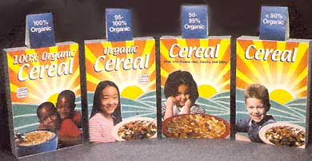

What's in a name? Or, in this case, a label? If you buy foods that say "organic," chances are that they not only contain modified or irradiated ingredients, but that some of those ingredients may have been produced using hormones, antibiotics, and synthetic or sludge fertilizers. Seeking to consolidate the current patchwork of "organic" and "natural" labels on foods, the U.S. Department of Agriculture (USDA) has proposed a national standard that will regulate the production and processing of organic foods and ingredients.
Presently, products marketed as "organic" are certified by numerous state and private agencies, thereby creating domestic consumer confusion and complicating the export of products. But under the USDAs new proposal, which Agriculture Secretary Dan Glickman called "the most comprehensive and strongest organic standard in the world," all crops, livestock and processed foods that want to include "organic" on their labels will have to be produced under uniform guidelines governing the methods, substances and handling that go into their production. Three controversial processes in particular - the use of genetically modified ingredients, the use of radiation to decontaminate, and the use of sewage sludge as fertilizer - are specifically prohibited under the new labeling criteria.
The USDA'S attempt to regulate this fast-growing sector of American agriculture suggests that the agency can no longer ignore consumer demand estimated retail sales of organic foods in 1999 were nearly $6 billion) nor the growing community of organic farmers, many of whom are small-scale producers. In the past, many USDA policies were criticized for discriminating against both consumers and small farmers. In a recent press release, however, the USDA confidently claims that its new standard is "exactly what American consumers and organic farmers want," and the department announced additional measures to promote organic agriculture, including a trial, risk-management insurance program to aid the organic farming community.
But will stringent federal regulations encourage small-scale organic farming? Katherine DiMatteo, the Organic Trade Association's executive director, thinks the rules could hinder rather than help. "Some of the requirements may prove to be a challenge to the industry particularly for Smaller operations," she said in a public statement. "For instance, will the supply of approved materials be sufficient to allow production of the organic products consumers clamor for?"
The genetically modified foods controversy, ("Brave New Food", MOTHER, April/May 2000), is a touchy subject where science, social values and commerce clash, causing both consumer suspicion and trade blockades. As a precursor to more recent protests, organic producers, concerned consumers and environmentalists rallied against the USDA's 1997 proposal, arguing that its standards not only threatened the good name of "organic," but also allowed big agribusinesses to compete in the burgeoning organic market by blurring the lines between nonorganic and organic production methods. Now, nearly three years later, those protests are being accounted for in the USDA's new standards. And while the implications of these regulations for organic farmers remain to be seen - the proposal could go into effect as early as the end of this year - the victory for consumers is clear: "Organic," under any other label other than "USDA Certified," simply wouldn't be organic.
-Erin Torneo
|
 |
|
|